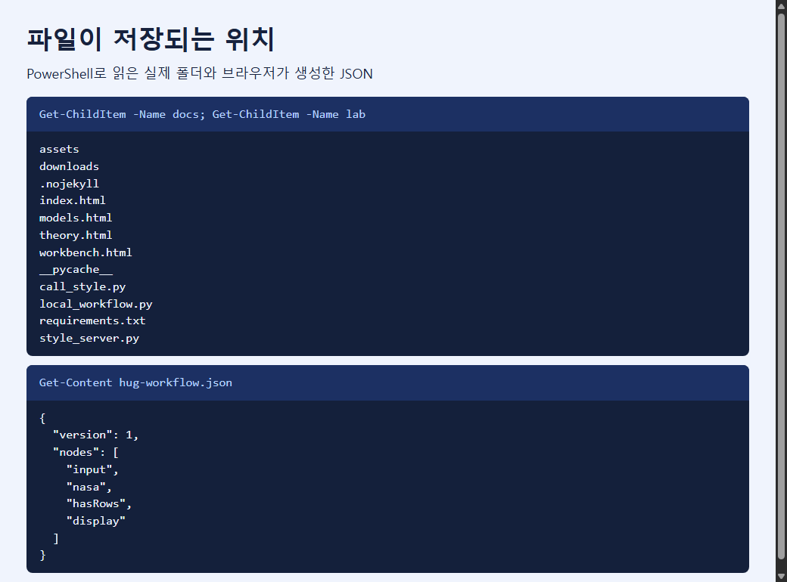

워크플로에서 컴퓨터공학으로
상자 뒤에서 일어나는 일
쉬운 사례로 용어의 역할을 먼저 구분하고, 실제 실습에서 그 개념이 어디에 쓰였는지 따라갑니다.
무엇을 어느 상자에 맡길까요?
매주 공지 두 개를 펼쳐 바뀐 부분을 확인하고, 동료에게 보낼 안내문을 쓴다고 해봅시다. 날짜나 숫자가 달라졌는지 비교하는 작업은 기준을 코드로 적기 쉽습니다. 바뀐 내용을 이해하기 쉬운 문장으로 쓰는 일에는 모델을 써볼 수 있습니다.
| 수업에서 나오는 말 | 무슨 역할인가 | 사진 카드 예제 |
|---|---|---|
| 워크플로 | 언제 무엇을 하고 결과를 어디로 넘길지 정합니다. | 검색 → 결과 확인 → 설명 작성 → 저장. |
| API | 다른 프로그램에 자료나 동작을 요청하는 방법을 정합니다. | NASA에 moon으로 사진을 검색합니다. |
| MCP | 연결한 서버에 어떤 도구가 있는지 알아보고 호출하는 방법을 맞춥니다. | 도구 목록에서 작성 규칙 조회를 찾아 호출합니다. |
| CLI | 터미널 명령으로 프로그램에 일을 시킵니다. | Claude Code의 로그인 상태를 확인하고 짧은 요청을 보냅니다. |
| 모델과 프롬프트 | 모델은 문장을 생성하고, 프롬프트는 그때 읽을 요청과 조건을 줍니다. | 원문을 써서 어린이용 한국어 설명을 만듭니다. |
위 순서를 사람이 정해 놓으면 호출 위치와 실패 지점을 단계별로 확인할 수 있습니다. 모델이 상황에 맞춰 필요한 도구와 다음 행동을 여러 번 고르게 하는 방식은 에이전트 설계에 가깝습니다. 이번 실습은 먼저 순서가 보이는 흐름을 만들고, 필요한 위치에 모델과 도구를 연결합니다.
자료구조와 실행기
파일 트리와 실행 그래프
“파일 트리는 어느 서랍에 파일이 있는지 보여줍니다. 그래프의 화살표는 지금 하던 일이 끝나면 다음에 무엇을 할지 보여줍니다.”
파일 구조의 예
수업 사이트/
├─ docs/ 브라우저가 읽는 페이지
│ └─ assets/ 실행 코드와 이미지
├─ lab/
│ ├─ style_server.py
│ └─ call_style.py
└─ README.md 실행·게시 안내
hug-workflow.json 브라우저에서 내보낸 그래프작업의 의존 관계
검색어 입력 → 검색 → 결과 확인
├─ 1건 이상 → 카드 표시
└─ 0건 → 안내
연결이 끊기면 검색 단계에 오류를 기록합니다.노드는 작업 하나이고 트리거는 그 작업 흐름을 시작하는 신호입니다. 예를 들어 실행 버튼을 누르면 실행기가 위에서부터 작업을 처리합니다. 연결선은 다음 단계의 순서를 보여주고, 다음 단계에서 앞의 결과 중 어떤 값을 가져갈지도 설정할 수 있습니다.
유향 그래프에서는 연결에 방향이 있습니다. A → B는 A가 먼저여야 B가 실행될 수 있다는 의존 관계로 해석할 수 있습니다. 한 노드에 여러 선이 들어오면 실행기는 필요한 선행 작업이 완료됐는지 확인합니다. 작업이 서로를 기다리는 고리가 없는 구조를 DAG(유향 비순환 그래프)라고 합니다.
위상 정렬은 모든 선행 작업이 해당 작업보다 먼저 오도록 순서를 정하는 방법입니다. 두 작업이 서로 필요로 하는 순환이 있으면 그런 순서를 만들 수 없습니다. 실습실은 고를 수 있는 단계가 위에서 아래로 이어지고, 0건 분기에서 안내가 뜨는 간단한 형태입니다. 일반 엔진은 독립 단계 병렬 실행과 여러 분기의 결과 합치기도 처리할 수 있습니다.
순서가 두 개일 수도 있습니다. 사진 조회와 작성 규칙 조회가 서로의 결과를 필요로 하지 않으면 어느 쪽을 먼저 해도 됩니다. ‘설명 쓰기’는 사진 설명과 규칙을 모두 받아야 하므로 두 단계 뒤에 와야 합니다. 그림으로 그리면 어떤 단계가 기다려야 하는지 보입니다.
실행 기록은 다녀온 노드, 받은 값, 내보낸 값, 오류와 함께 남기는 기록입니다. 저장된 그래프는 재실행용 설계도입니다. 예를 들어 같은 그래프라도 NASA 결과가 바뀌면 카드가 바뀔 수 있습니다.

확인 질문 · 사진 검색보다 결과 확인을 먼저 하면?
결과 확인이 사용할 사진 목록이 아직 없습니다. 두 상자를 올바른 순서로 놓거나, 편집기가 누락된 입력을 이해하기 쉽게 표시해야 합니다.
네트워크와 데이터 형식
HTTP, JSON, MCP, CLI
“NASA의 사진 검색 주소를 알아야 검색을 요청할 수 있습니다. 우리가 만든 MCP 서버에는 어떤 도구를 제공하는지 먼저 물어볼 수 있습니다.”
HTTP와 JSON
HTTP는 요청과 응답을 주고받는 규칙입니다. 요청에는 방식과 주소, 조건이 들어갑니다. 응답의 상태 코드 200은 요청이 처리됐다는 뜻이라서 사진 0건일 때도 받을 수 있습니다. 연결이 실패하면 응답 상태 코드 자체를 받지 못할 수 있습니다.
GET /search?q=moon&media_type=image
→ 200
→ {"items": [...]}위 JSON은 개념을 보여주려고 간단히 적었습니다. NASA 응답의 실제 목록은 collection.items에 있습니다.
도구 목록과 호출
MCP 클라이언트는 서버에 연결해 도구 목록을 요청합니다. 도구가 받는 값의 이름과 자료형은 JSON Schema로 표현할 수 있습니다. 이 예에서는 audience에 허용한 문자열 중 하나를 보냅니다.
tools/list
→ get_card_style (audience)
tools/call
→ {"audience": "children"}실습 서버와 클라이언트는 같은 PC에서 표준 입력·출력(stdio)으로 메시지를 교환합니다.
API는 프로그램이 다른 프로그램에 일을 요청하는 방법을 정한 인터페이스입니다. NASA 검색 API는 HTTP로 요청하고, JSON으로 답을 받을 수 있습니다. JSON에서는 {"title": "Nearside of the Moon"}처럼 이름과 값이 짝을 이룹니다. 화면의 제목 칸은 이 중 title의 값만 골라 씁니다.
주소와 응답 읽기
/search는 검색 기능의 주소입니다. 물음표 뒤에는 q=moon처럼 검색어와 조건을 붙입니다. 응답 JSON의 중괄호 { }에는 이름이 붙은 값들을, 대괄호 [ ]에는 여러 항목의 목록을 적습니다. []는 빈 목록입니다.
도구 목록과 응답 읽기
tools/list에서 audience가 문자열이며 children과 exhibit를 받을 수 있다는 내용을 읽습니다. tools/call은 실제로 값을 보냅니다. Python 실습은 두 단계를 출력에서 따로 보여줍니다.
CLI는 터미널에서 명령으로 조작하는 인터페이스입니다. Claude Code CLI처럼 앱이 명령의 종료 상태와 응답을 읽어서 다음 노드의 데이터로 쓸 수도 있습니다. 요청 명령, 성공 여부, 결과 데이터가 각각 어디서 나오는지 분리해 이해하면 문제를 찾기 쉽습니다.
외부에서 돌려준 제목과 설명은 데이터로 처리하고, 프로그램이 따라야 할 지시와 권한은 별도로 지정합니다. 실습 도구는 허용한 작성 규칙 하나만 읽고, 공개 페이지는 계정이나 API 키를 요청하지 않습니다.
확인 질문 · API와 MCP 중 어느 쪽이 인터넷을 쓰나요?
연결 방식은 구현에 따라 다릅니다. 이번 NASA API는 인터넷을 쓰고, 모델 서버에 보내는 HTTP 요청은 내 PC에서 끝납니다. 수업의 MCP는 같은 PC에서 표준 입출력으로 연결하지만, HTTP로 연결하는 원격 MCP 서버도 있습니다.
인공지능과 컴퓨터 시스템
토큰, 어텐션, 양자화
“모델은 질문을 토큰이라는 조각으로 나눠 숫자로 바꿉니다. 앞에 들어온 조각들을 참고해 다음 조각의 후보를 계산하고, 선택한 조각을 이어 붙여 문장을 만듭니다.”
토큰과 문맥
토큰은 단어, 단어 일부, 기호가 될 수 있습니다. 언어와 토크나이저에 따라 같은 글자 수도 다른 토큰 수가 됩니다. 문맥 창은 모델이 한 번의 계산에서 다룰 수 있는 토큰 범위입니다. 입력과 이어서 생성할 토큰에 예산이 필요합니다.
어텐션
어텐션은 여러 위치의 정보에 가중치를 주고 조합하는 연산입니다. 앞 문장의 ‘달’과 뒤 문장의 ‘그 천체’처럼 멀리 떨어진 단서도 이어서 처리할 수 있습니다. 모델이 참고한 입력이 길어지면 처리 시간과 메모리도 늘어날 수 있습니다.
파라미터와 양자화
0.6B는 대략 6억 개의 파라미터를 뜻합니다. 양자화는 가중치를 더 낮은 정밀도로 표현해 공간을 줄이는 방법입니다. Q4_K_M 파일은 블록과 일부 텐서에 서로 다른 표현을 적용하며, 파일에는 메타데이터도 들어갑니다.
실행에 필요한 메모리
메모리에는 가중치 외에도 이전 토큰 계산을 다시 쓰기 위한 KV 캐시와 실행 버퍼가 필요합니다. 6억 개를 모두 4비트로 보관한다고 단순 계산하면 약 300 MB입니다. 약 397 MB인 실제 수업 파일과 실행 메모리에는 각각 추가 요소가 있습니다.
첫 글자가 나올 때와 계속 써 내려갈 때
모델은 먼저 입력 토큰들을 읽고 계산합니다. 이 구간을 프리필이라고 합니다. 이어 다음 토큰을 고르고 이어 붙이는 구간이 디코딩입니다. 입력이 길면 답이 시작되기 전 계산이 늘 수 있고, 길게 답하도록 하면 시작 이후 기다리는 시간이 늘 수 있습니다. 첫 응답까지의 시간과 전체 완료 시간을 나눠 보는 이유입니다.
확인 질문 · 작은 파일이면 항상 응답이 빠를까?
가중치 크기는 한 요인입니다. CPU 종류, 스레드, 메모리 대역폭, 입력과 출력 토큰 수, 실행기의 최적화에 따라 달라집니다. 같은 PC와 입력으로 측정해야 비교하기 쉽습니다.
모델 활용과 학습
지시, 자료 검색, 학습은 어디를 바꾸나?
| 방식 | 바꾸는 것 | 수업 예와 적합한 경우 |
|---|---|---|
| 프롬프트 · Skill | 실행할 때 받는 지시와 예시 | 어린이용 두 문장, 보고서 양식, 부서 문체를 적용합니다. |
| RAG | 질문과 함께 제공하는 근거 자료 | 관련 규정이나 원문을 먼저 찾고, 찾은 출처를 답변과 함께 제공합니다. 사진 설명을 모델에 넘기는 실습에서 출발할 수 있습니다. |
| LoRA | 기본 가중치에 더할 작은 학습용 행렬 | 수많은 입력·응답 예시에서 일관된 패턴을 익히게 하고 싶을 때 씁니다. 기본 가중치를 고정한 채 저랭크 행렬을 학습합니다. |
원문이나 규정이 자주 바뀐다면 자료를 검색하는 단계부터 고려합니다. 반복되는 형식이 문제라면 먼저 작성 규칙과 예시를 바꿔본 뒤, 학습이 필요한지 판단합니다. LoRA의 효과는 학습에 쓰지 않은 입력을 두고 기본 모델과 어댑터 적용 모델을 비교합니다.
실습에서 어느 부분이 검색일까요?
NASA에서 사진 설명을 찾는 작업이 검색이고, 찾은 설명을 모델에 넘겨 글을 만드는 작업이 생성입니다. RAG의 기본 구조도 이렇게 자료를 먼저 찾아 입력에 넣는 흐름입니다. 여러 문서를 검색하는 시스템으로 넓히면 어떤 자료를 찾아 모델에 넘길지와 출처 표시가 중요해집니다.
프롬프트를 바꿔도 부족하다면?
‘쉬운 문장’이라는 규칙이 모델에 잘 전달됐는지 먼저 봅니다. 그래도 기록된 여러 사례에서 같은 문제가 반복되면 LoRA처럼 학습하는 방법을 검토할 수 있습니다. 이때 지시 준수, 내용 정확성처럼 평가 기준을 먼저 정합니다.
재사용과 검증
다시 실행해도 확인할 수 있게
그래프에는 절차를, 작성 규칙에는 결과 형식을, 실행 기록에는 실제로 일어난 일을 남깁니다. 예약 실행을 붙일 때는 정한 시간에 실행할 환경과 실패했을 때 기록을 확인할 방법을 같이 정합니다. 여러 실행의 결과와 실패 상태를 모은 화면이 대시보드가 됩니다.
내 프로그램이라면 정상 입력, 빈 입력, 외부 연결 실패 세 경우를 준비해봅니다. 정해진 값은 정확히 나오는지 검증하고, 모델이 쓴 글은 근거 보존과 지시 준수를 따로 확인합니다.
같은 작업을 다시 돌렸을 때
검색은 다시 실행하기 쉽지만, 메일 전송이나 데이터 등록 뒤 연결이 끊기면 실제 처리 여부부터 알아야 합니다. 같은 요청을 한 번 적용했을 때와 여러 번 적용했을 때 의도한 최종 효과가 같은 성질을 멱등성이라고 합니다. 예를 들어 요청 번호를 기록해 같은 번호로 안내 메일이 두 번 발송되지 않게 설계할 수 있습니다. 이 수업의 로컬 예제는 같은 결과 파일에 덮어쓰므로 두 번의 초안을 비교하려면 첫 파일을 따로 복사합니다.
내 워크플로에 적용하기 · ‘무엇을 넣는지’, ‘각 단계가 무슨 값을 내놓는지’, ‘어떤 결과가 맞다고 볼 기준인지’를 한 줄씩 써봅니다. 검증 기준이 정해지면 프로그램이 성공했다는 표시와 업무 결과가 맞는지를 따로 볼 수 있습니다.